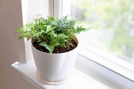

Boston Fern
Scientific Name: Nephrolepis exaltata
Soil: well-drained but moisture-retaining soil or soilless potting medium
Light: bright, filtered or indirect light
Water: Once a week
Temperature: 65 to 95 degrees Fahrenheit
Safety: Nontoxic
Rabbit's Foot Fern
Scientific Name: Phlebodium aureum
Soil: Moist, well-draining
Light: Medium, indirect dappled light
Water: Keep soil moist
Temperature: 75 to 85 degrees Fahrenheit
Safety: Nontoxic
Lady Fern
Scientific Name: Athyrium filix-femina
Soil: Loamy, well-drained soil
Light: full to partial shade
Water: Keep soil moist but not soggy
Temperature: 40 to 75 degrees Fahrenheit
Safety: Toxic